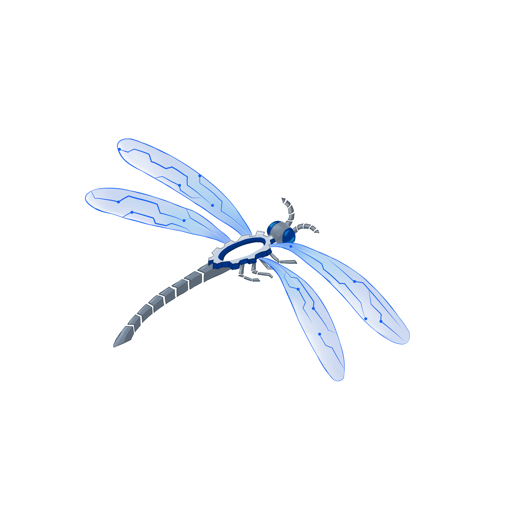

<nav
  class="fixed left-0 top-0 z-[60] w-full bg-gradient-to-r from-[#0f2a5c] via-[#1654a7] to-[#3b82f6] shadow-lg"
  role="navigation"
>
  <div
    class="mx-auto flex max-w-6xl items-center justify-between px-4 py-3 sm:px-6 md:px-16"
  >
    <!-- KOLOM 1: logo -->
    <div class="flex items-center gap-2">
      
      <h2
        class="hidden sm:block font-['Poppins'] font-bold text-white text-sm md:text-base"
      >
        INISIASI FTI 2026
      </h2>
    </div>

    <!-- KOLOM 2: menu desktop -->
    <div
      id="menu-desktop"
      class="hidden md:flex justify-end gap-12 font-semibold text-white font-['Poppins']"
    >
      <a href="index.html" class="relative inline-block group">
        Beranda
        <span
          class="absolute left-0 -bottom-1 w-full h-0.5 bg-white scale-x-0 group-hover:scale-x-100 transition-transform duration-300"
        ></span>
      </a>
      <a href="peserta.html" class="relative inline-block group">
        Peserta
        <span
          class="absolute left-0 -bottom-1 w-full h-0.5 bg-white scale-x-0 group-hover:scale-x-100 transition-transform duration-300"
        ></span>
      </a>
      <a href="tugas.html" class="relative inline-block group">
        Tugas
        <span
          class="absolute left-0 -bottom-1 w-full h-0.5 bg-white scale-x-0 group-hover:scale-x-100 transition-transform duration-300"
        ></span>
      </a>
      <a href="media.html" class="relative inline-block group">
        Media
        <span
          class="absolute left-0 -bottom-1 w-full h-0.5 bg-white scale-x-0 group-hover:scale-x-100 transition-transform duration-300"
        ></span>
      </a>
    </div>

    <!-- KOLOM 3: tombol hamburger (muncul di HP, ilang di laptop) -->
    <div class="flex md:hidden justify-end">
      <button
        id="hamburger-btn"
        type="button"
        aria-controls="menu-mobile"
        aria-expanded="false"
        aria-label="Buka menu navigasi"
        class="text-2xl text-white focus:outline-none sm:text-3xl"
      >
        ☰
      </button>
    </div>
  </div>

  <!-- Menu dropdown khusus HP -->
  <div
    id="menu-mobile"
    class="hidden md:hidden flex-col bg-blue-600 font-['Poppins'] font-semibold text-white absolute top-full left-0 w-full shadow-lg z-50"
  >
    <a
      href="index.html"
      class="px-6 py-3 border-b border-white/20 hover:bg-blue-700 transition-colors"
      >Beranda</a
    >
    <a
      href="peserta.html"
      class="px-6 py-3 border-b border-white/20 hover:bg-blue-700 transition-colors"
      >Peserta</a
    >
    <a
      href="tugas.html"
      class="px-6 py-3 border-b border-white/20 hover:bg-blue-700 transition-colors"
      >Tugas</a
    >
    <a href="media.html" class="px-6 py-3 hover:bg-blue-700 transition-colors"
      >Media</a
    >
  </div>
</nav>
